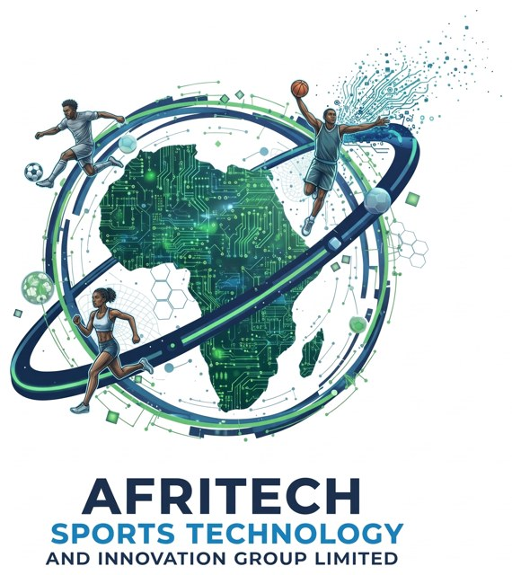

Partidas
Quer o MatchIQ nas suas partidas? Escreva para Advisory@afritechsports.com

Cada partida que analisamos com o MatchIQ é publicada aqui como um painel interativo. Cada uma é um único arquivo que funciona no celular, mesmo sem sinal.
Quer o MatchIQ nas suas partidas? Escreva para Advisory@afritechsports.com